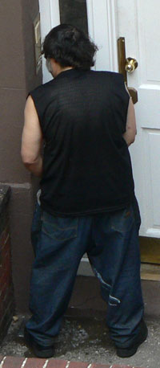

Curbed hates me

It seems like every time I comment there, which is not often, Curbed rejects whatever it is I have to say.
I’m not sure what my offense is. Maybe my comments are aloof—and why shouldn’t they be? The comment threads over there are common as all hell. I’m better than Anonymous’s “Pee Free or Die” outburst and that’s all there is to it.
So occasionally MrLittlePants tips off Curbed to something, lately it’s been funny pictures of our neighbor cleaning up vomit, and today they ran a pic he had sent in of a guy peeing on that same door.
Good stuff. But Curbed decides to run with a “class war” headline and notes, “they have a neighbor hell-bent on keeping watch and documenting it all.” This kind of gets on my nerves since MrLittlePants is doing them a friggin’ favor sending in good material he knows they want. That’s the only reason he’s taking the pictures.
Anyway, here’s my dumb comment that I spent several minutes on that would otherwise never appear on this World Wide Web. Thank God for one’s own damn weblog:
What your tipster means to emphasize, I think, is the tragic irony of an 11th Street townhouse that’s routinely defiled by partying idiots with nowhere private to relieve themselves. It’s incredible that this “rich” owner of a some-million dollar piece of property has to deal with human waste so frequently.
Meanwhile our scourge-of-the-block rental building is mostly un-barfed-upon. I mean, sure we’re in the jealous underclass, but we’re taking these pictures more to curb our own aspirations for property in this ‘hood than to bring down those lucky (or not-so-lucky) enough to have it already.
And that’s it. I shan’t try to mingle among the curbed polloi again.
UPDATE: Dumb comment, approved! (Who can beat that 20-hour turnaround?)
Add a comment